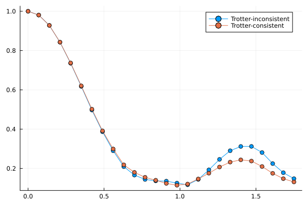

In this notebook we want to explore performing "Trotter cosistent" truncations within a Trotter step, while imposing a more stringent truncation after each Trotter step.
using Revise
using MajoranaPropagation
using Base.Threads
using Plots
nthreads()1We study the dynamics of $5\times 5$ Fermi-Hubbard in the strongly interacting regime $U/t=8$
N_x = 5
N_y = 5
N_spinful_sites = N_x * N_y
t = 1.
U = 8.
n_layers = 25
dt = 0.07For simplicity we restrict ourselves to a 1st order Trotterization of the Hamiltonian
topo = rectangletopology(N_x, N_y)
circ_single = []
thetas_single = []
#up hoppings
for (i, j) in topo
push!(circ_single, FermionicRotation(:hopup, [i, j]))
push!(thetas_single, -t * dt)
end
#down hoppings
for (i, j) in topo
push!(circ_single, FermionicRotation(:hopdn, [i, j]))
push!(thetas_single, -t * dt)
end
#on-site repulsion
for i = 1:N_spinful_sites
push!(circ_single, FermionicRotation(:nupndn, i))
push!(thetas_single, U * dt)
endWe set the truncations: crucially, we want to explore the difference between always truncating strings with more than 4 unpaired Majoranas versus allowing 6 unpaired Majoranas within each Trotter step and truncating with 4 unpaired only after the full step. Notice that by the properties of the Fermi-Hubbard Hamiltonian the process of going from 4 unpaired to 6 and then back to 4 happens at order $(\delta t)^2$, hence happens at the same order of the Trotter error, since we are using a 1st order Trotterization
min_abs_coeff = 5.e-4
max_unpaired = 2
max_unpaired_in_step = 4
unpaired_mask = create_unpaired_mask(2 * N_spinful_sites)As initial state we select a checkerboard state with a hole in the middle
#initial state
initial_state_label = "Hole checkerboard"
is_spinful = true
hole_pos = 13
fock_state = FockState(N_spinful_sites, :checkerboard, is_spinful; nx=N_x, hole_positions=hole_pos)
fock_stateFock state with 24 fermions at positions
↑: 1, 3, 5, 7, 9, 11, 15, 17, 19, 21, 23, 25
↓: 2, 4, 6, 8, 10, 12, 14, 16, 18, 20, 22, 24Here we propagate the same oservable tracking the probability of finding the hole in its original position using the two approaches, while for the case of the "Trotter consistent" approach we truncate using the more stringent cutoff after each step.
obs = VectorMajoranaSum(MajoranaSum(N_spinful_sites, :hole, hole_pos))
obs_trotter_consistent = VectorMajoranaSum(MajoranaSum(N_spinful_sites, :hole, hole_pos))
res = zeros(n_layers+1)
res_trotter_consistent = zeros(n_layers+1)
res[1] = overlapwithfock(obs, fock_state)
res_trotter_consistent[1] = overlapwithfock(obs_trotter_consistent, fock_state)
for k=1:n_layers
print(k, " ")
obs = propagate!(circ_single, obs, thetas_single, min_abs_coeff=min_abs_coeff, max_unpaired=max_unpaired, unpaired_mask=unpaired_mask)
obs_trotter_consistent = propagate!(circ_single, obs_trotter_consistent, thetas_single, min_abs_coeff=min_abs_coeff, max_unpaired=max_unpaired_in_step, unpaired_mask=unpaired_mask)
obs_trotter_consistent = truncate!(obs_trotter_consistent, min_abs_coeff=-1, max_unpaired=max_unpaired, unpaired_mask=unpaired_mask)
res[k+1] = overlapwithfock(obs, fock_state)
res_trotter_consistent[k+1] = overlapwithfock(obs_trotter_consistent, fock_state)
end 1
2
3 4 5 6 7 8
9 10
11 12
13 14
15
16
17
18
19
20
21
22
23
24
25Notice that the two expectation values are not that far from each other. However, both coefficient and unpaired truncations are here set quite aggressively (in order for this example to run in a reasonable time), and a much bigger difference is expected for more accurate truncations.
p = plot((0:n_layers) .* dt, res, label="Trotter-inconsistent", marker=:o)
plot!((0:n_layers) .* dt, res_trotter_consistent, label="Trotter-consistent", marker=:o)